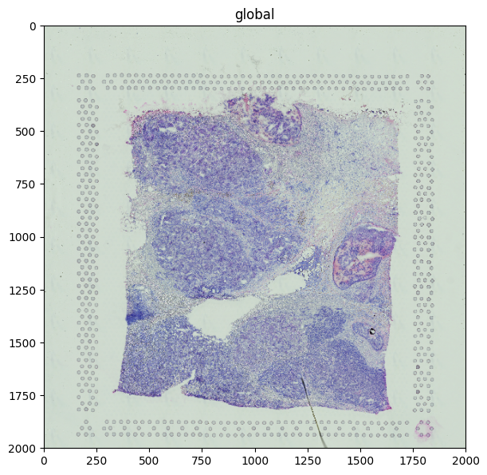
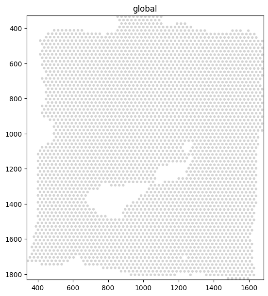
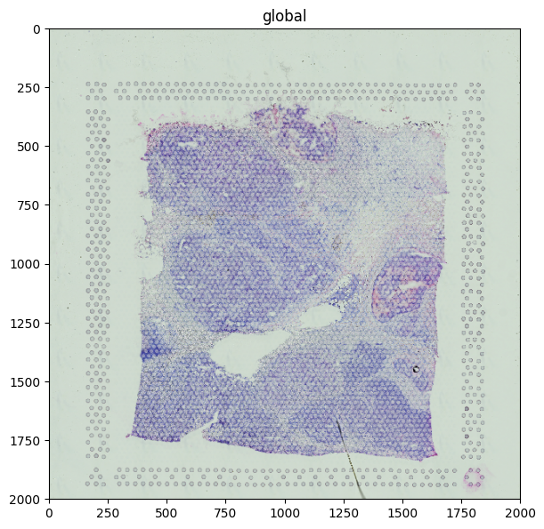
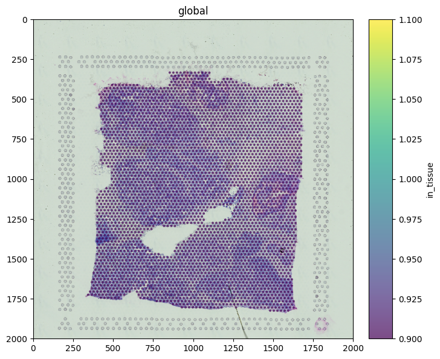
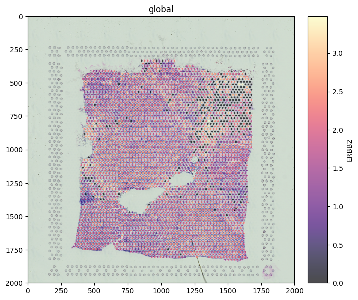

Plotting Visium spatial transcriptomics data#
This tutorial walks through visualising a real 10x Genomics Visium experiment with spatialdata-plot: H&E tissue image, spot polygons, gene expression overlays, and publication-style styling.
Dataset: Human Breast Cancer (Block A Section 1) from 10x Genomics — fetched once via scanpy.datasets.visium_sge and cached by pooch for subsequent runs.
Credit: the example progression in this tutorial — H&E + spots, gene-expression overlays, outline styling — was originally curated by @asarigun in scverse/spatialdata-plot#590.
Loading the dataset#
scanpy.datasets.visium_sge returns an AnnData object with the H&E image, spot coordinates, and per-spot expression. The helper below wraps it as a SpatialData object with a tissue image, spots shapes, and a normalised expression table.
import warnings
import numpy as np
import scanpy as sc
import spatialdata as sd
import spatialdata_plot # noqa: F401 (registers the .pl accessor)
from spatialdata.models import Image2DModel, ShapesModel, TableModel
def load_visium_breast_cancer() -> sd.SpatialData:
"""Return the 10x Visium breast-cancer Block A Section 1 as a SpatialData object."""
with warnings.catch_warnings():
warnings.simplefilter("ignore")
adata = sc.datasets.visium_sge(sample_id="V1_Breast_Cancer_Block_A_Section_1")
sample = next(iter(adata.uns["spatial"]))
meta = adata.uns["spatial"][sample]
sf = meta["scalefactors"]["tissue_hires_scalef"]
image = Image2DModel.parse(
np.moveaxis(meta["images"]["hires"], -1, 0),
dims=("c", "y", "x"),
)
radius = meta["scalefactors"]["spot_diameter_fullres"] * sf / 2
spots = ShapesModel.parse(
adata.obsm["spatial"] * sf,
geometry=0, # 0 = Point geometry; spatialdata-plot draws them as discs via `radius`
radius=radius,
index=adata.obs_names,
)
adata.obs["region"] = "spots"
adata.obs["region"] = adata.obs["region"].astype("category")
adata.obs["instance_key"] = adata.obs_names
table = TableModel.parse(
adata,
region="spots",
region_key="region",
instance_key="instance_key",
)
table.var_names_make_unique()
sc.pp.normalize_total(table)
sc.pp.log1p(table)
return sd.SpatialData(
images={"tissue": image},
shapes={"spots": spots},
tables={"table": table},
)
sdata = load_visium_breast_cancer()
sdata
SpatialData object
├── Images
│ └── 'tissue': DataArray[cyx] (3, 2000, 2000)
├── Shapes
│ └── 'spots': GeoDataFrame shape: (3798, 2) (2D shapes)
└── Tables
└── 'table': AnnData (3798, 36601)
with coordinate systems:
▸ 'global', with elements:
tissue (Images), spots (Shapes)
Rendering the tissue image#
The H&E image is a standard three-channel RGB image. Rendering it alone gives the histology view.
sdata.pl.render_images("tissue").pl.show(figsize=(6, 6))

Rendering spots on their own#
Visium spots are stored as shapes. Rendered alone, they show the regular hexagonal capture pattern.
sdata.pl.render_shapes("spots").pl.show(figsize=(6, 6))

Overlay: tissue + spots#
The fluent API chains the two renders. Use fill_alpha on the spots so the underlying tissue stays visible.
(
sdata.pl.render_images("tissue")
.pl.render_shapes("spots", fill_alpha=0.5)
.pl.show(figsize=(6, 6))
)

Coloring spots by gene expression#
Pass color=<gene> to map a column from the linked table onto the spot fill. ERBB2 (HER2) is a well-known breast-cancer marker; the expression pattern aligns with the tumour-rich regions of this section.
(
sdata.pl.render_images("tissue")
.pl.render_shapes("spots", color="ERBB2", cmap="magma", fill_alpha=0.8)
.pl.show(figsize=(6, 6))
)
Coloring spots by a category#
color= also accepts categorical columns — here, the in_tissue flag 10x sets to mark spots that fall on tissue.
(
sdata.pl.render_images("tissue")
.pl.render_shapes("spots", color="in_tissue", fill_alpha=0.7)
.pl.show(figsize=(6, 6))
)

Publication-style styling#
For a polished figure: keep the tissue context, color the spots by expression with a perceptually uniform colormap, draw a thin white outline to make the spots pop against the H&E, and use a translucent fill so the histology underneath remains readable.
(
sdata.pl.render_images("tissue")
.pl.render_shapes(
"spots",
color="ERBB2",
cmap="magma",
fill_alpha=0.7,
outline_width=0.4,
outline_color="white",
outline_alpha=1.0,
)
.pl.show(figsize=(6, 6))
)

Where to next#
API reference — every parameter of
render_shapes,render_images, andshow()is documented in the plotting API.Getting started tutorial — if you skipped it, the Getting started tutorial covers the same fluent API on the lightweight built-in
blobsdataset.Contributing — found a missing example? Open a PR on
spatialdata-plot-notebooks.